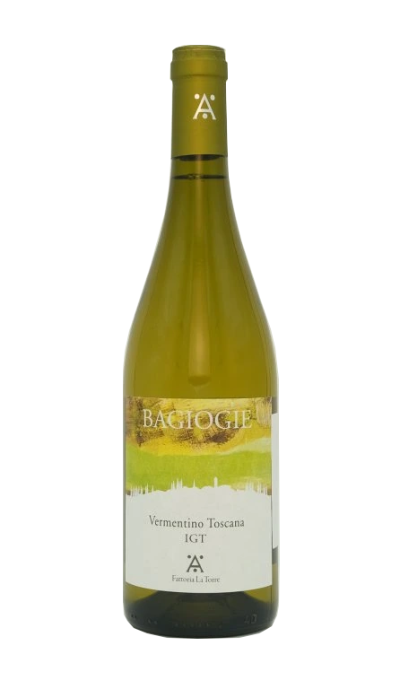

Vermentino IGT Bagiogie 2023
Svěží a minerální bílé víno z Toskánska s výraznými tóny citrusových plodů, bylin a jemnou slaností v závěru.
- Profil: citrusy, bylinky, mineralita
- Párování: ryby, mořské plody, středomořská kuchyně
- Servis: 8–10 °C